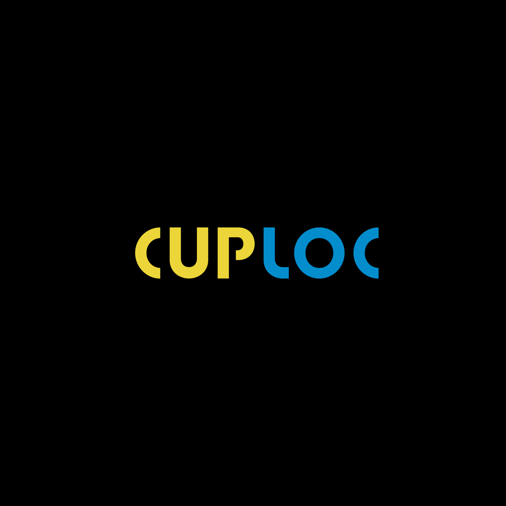

Tu ciudad. Más por descubrir.
Ofertas en restaurantes, masajes, salones de belleza y más. Sorteos diarios para ganar servicios gratuitos y descubrir nuevos lugares.
Un ecosistema de dos apps: una para usuarios y otra para negocios. Más de 8,000 usuarios y más de 70 negocios afiliados en León, Guanajuato.
Instagram ↗